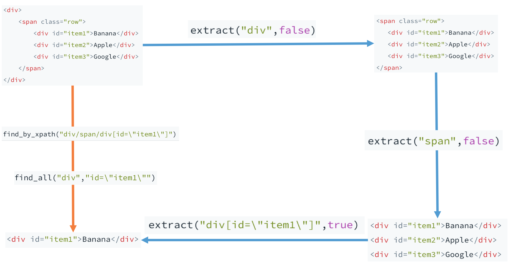

class: center, middle, inverse # CRawlerPlusPlus: A modern C++ web crawler, and more ### by [@Yanlin](https://github.com/alan97), [@Yimin](https://github.com/elega) & [@Hongning](https://github.com/huanyan-hny) --- # Why crawler? The coming week is the reading week. -- You are busy at Bulter ~~watching Columbia Buy Sell Memes~~ preparing for exams. <a href="url"><img src="img/meme.png" align="middle" height="400"></a> -- You feel hungry, but you are too lazy to go grab food. -- What to do? -- Order Seamless! --- # Why crawler? But you are even too lazy to look at Seamless. You'd rather just pick a restaurant and order all of its most popular food under $15 bucks. -- What to do now? -- Write a .red[*crawler*] to scrape everything down from Seamless for you! -- Wait... what is a crawler? And wouldn't that be more work? -- Not at all! -- .big[Goal in 30 minutes: everyone can write a simple crawler with CRawlerPlusPlus] --- class: center, middle, inverse # HTTP in 2 minutes --- template: default layout: true ### HTTP in 2 minutes --- # The language that client and server talks in The Hypertext Transfer Protocol (HTTP) has two main components: request and response. -- Let's read a HTTP **request**: ```HTTP GET /Bjarne.jpg HTTP/1.1 Host: www.stroustrup.com Connection: keep-alive User-Agent: Chrome/57.0.2987.133 Accept: text/html,application/xhtml+xml,application/xml;q=0.9,image/webp,*/*;q=0.8 Accept-Language: en-US,en; ``` -- It says: - I want to .red[GET] a file called .red[/Bjarne.jpg] from the host .red[www.stroustrup.com]. - I want to keep the connection between us .red[alive]. - I am a .red[Chrome] browser. - I accept the following response, including picture (.red[image/webp]). - I accept English as the language. --- # The language that client and server talks in And here's the **response** from the server: ```HTTP HTTP/1.1 200 Okay Date: Fri, 28 Apr 2017 05:51:09 GMT Server: Apache Connection: Keep-Alive Keep-Alive: timeout=5, max=100 Set-Cookie: sessionid=38afes7a8; httponly; Path=/ ``` -- It says: - I received your request and the .red[status] now is Okay. - I documented the .red[timestamp] our connection happens. - I am an .red[Apache] server. - I will keep our connection .red[alive], but after .red[5] seconds if the connection is idle I will close it. - In each persistent connection, you can make a maximum of .red[100] requests. - And here's a piece of .red[cookie] information. Put that in your cookie jar and let me know your .red[sessionid] next time when we talk. Easy? Good! --- # How is this related to web crawler Definition : "_A Web crawler, sometimes called a spider, is an Internet bot that systematically browses the World Wide Web, typically for the purpose of Web indexing (web spidering)._" (Wikipedia) -- In short, a web crawler will go to designated websites and make .red[requests] on behalf of you. -- It will then .red[parse the response] according to your requirement. -- And .red[iterate, iterate, iterate]. --- class: center, middle, inverse layout: false # Motivation -- Why are we building a web crawler using C++ --- template: default layout: true ### Motivation --- # Many people told us not to do that... - A list of "Dozens of awesome C++ libraries": .red[not even one of them] is a crawler library (https://github.com/fffaraz/awesome-cpp) - Google search for "C++ crawler", it's either code snippets from ancient (7 yrs old or above), or something like below: -- <a href="url"><img src="img/sof.png" align="middle" height="140"></a> Source: http://stackoverflow.com/questions/4278024/a-very-simple-c-web-crawler-spider <a href="url"></a> Source: https://www.quora.com/How-do-I-make-a-simple-web-crawler-using-C++ --- # But we view this as an opportunity - C++ has changed: Modern C++ is more expressive than ever. - Async IO has become more mature -- and C++ has great control at system-level. - C++ is fast. Much faster than python. - C++ is strongly typed, so it catches errors earlier -- You don't want to waste all day (and network resources) downloading garbage before realizing it. --- # Purpose of this library: - To address the need of a crawler library in C++ - To showcase that Modern C++ is not as bad as people thought in handling network / string parsing / crawler job --- # C++ Features Used - Classes - Modularity, Inheritance, Polymorphism - Variadic template - User-friendly constructor (achieved with forwarding) - Multithreading, std::async and std::future, std::mutex, std::atomic - A multi-threaded, async IO solution, engine and scheduler - Operator overloading for intuitive access - RAII (Resource acquisition is initialization) - Mutex, smart pointer (unique and shared), etc. - Cleanup is as easy and intuitive as letting an object fall out of scope - Function objects and lambdas - To implement callback - Various STL containers, algorithms and utilities - Include but not limited to: unordered map, ordered map, vector, string - Concept - We worked on that but not to use it in our final delivery - Move semantics - Use std::move to avoid copy --- layout: false class: center, middle, inverse # Architecture and Feature --- template: default layout: true ### Architecture --- # Key terms - Engine - The multithreaded **brain** that connects all the components and manages them. - Scheduler - Schedule the task, manage depth, duplication, etc. - Item & Item Pipeline - Item is the (well-structured) data to be stored - It can be image, json, txt, key-value pairs... anything - Item pipeline handles data persistence - Task & Downloader - A task unit contains all enough information for downloader to perform the task - e.g.: request_method, session_name, authentication info - Spider - Do the parsing of the HTTP response (either HTML or JSON) - Get items to be stored - Get future tasks to be performed - Powered by in-house parsing library (very handy!) --- <a href="url"></a> --- # Feature - Full fledged support to the majority of HTTP request functionality - GET request - POST request - URL encoded parameters - URL encoded POST values - Session - Cookie - Basic Authentication - OAuth 2.0 - Custom Header - Multiple return type support (HTML, file or JSON) - HTTPS (with openssl) - 100% user-friendly design - Flexible constructors with optional parameters that are **truly optional** (the sequence doesn't even matter!) - Painless callback function - Use function objects to achieve yield-like behavior --- # Feature (cont'd) - Multithreaded solution with asynchronous I/O - But write the spider as if it was single-threaded -- we handle everything for you! - Two downloader backends support - Boost ASIO downloader for simple, basic GET requests, but guarantees more low-level control; - Curl downloader for advanced usage, including POST requests, authentication, session, etc. - In-house Utility functions - Wrote a HTML and JSON parser: Easily navigate through both HTML and JSON files without the need of installing any third-party libraries! - Wrote simple_write, to_csv, etc. for data persistence. - Simple, expressive yet extensive - Provided modular, pluggable scheduler, item pipeline and spider. Powerful default ones but you can also write your own! - Basic anti-(anti-crawler) functionality - An intelligent scheduler that will match domain info and exclude duplicates automatically - Supports setting header for user-agent to 'trick' the server --- layout: false class: center, middle, inverse # Technical Highlight --- template: default layout: true ### Technical Highlight --- ## Truly optional constructor - Solution 0: Traditional Approach ```cpp Task::Task(string _url, spider_callback _callback, Request_method _method, Request_content _content , Session_type _session_type, string _session_name , Auth_type _auth_type , Authentication _auth, Form _form , Header _header); auto T = Task("http://google.com", nullptr, Request_method::GET, Request_content::HTML, Session_type::AUTO, "", Auth_type::None, Authentication("",""), Form {}, Header {}); // Long and tedious ... many things are the same in most of the time! ``` --- ## Truly optional constructor - Solution 1: Default Value ```cpp auto T = Task("http://google.com", nullptr); // Yeah everything else is optional now! // What if I want to specify the session name? auto T2 = Task("http://google.com", nullptr, Request_method::GET, Request_content::HTML, Session_type::NEW, "new_session"); /* Shoot -- I just want to specify the session name, * but will have to write all the previous default value explicitly! */ ``` --- ## Truly optional constructor - Solution 2: Constructor with default value + set_x methods ```cpp Task::Task(string _url, spider_callback _callback, Request_method _method, Request_content _content , Session_type _session_type, string _session_name , Auth_type _auth_type , Authentication _auth, Form _form , Header _header); auto T2 = Task("http://google.com", nullptr); T2.set_session_type(Session_type::LAST); auto T3 = Task("http://google.com", nullptr, Request_content::FILE, Request_method::POST, Session_type::LAST); // error /* error -- but why does it even matter?? * The library should be smart enough to understand what's going on! */ ``` --- ## Truly optional constructor - Our approach ```cpp template <typename... Tail> Task(string _url, spider_callback _callback, Tail... tail): url(_url), callback(_callback) { method = Request_method::GET; content = Request_content::HTML; session_type = Session_type::DEFAULT; session_name = ""; auth = Authentication("",""); form = {}; Crawler_Util::set_option(*this, tail...); } #define FWD(...) ::std::forward<decltype(__VA_ARGS__)>(__VA_ARGS__) template <typename C> void set_option(C& c) { // base case } template <typename C, typename T, typename... Ts> void set_option(C& c, T&& t, Ts&&... ts) { set_option(c, FWD(t)); set_option(c, FWD(ts)...); } template <typename C, typename T> void set_option(C& c, T&& t) { c.set_option(FWD(t)); } auto T3 = Task("http://google.com", nullptr, Request_content::FILE, Request_method::POST, Session_type::LAST); // Now it works! ``` --- ## Truly optional constructor - Pros and Cons Pros: - User does not need to call set_option explicitly - the ordering does not matter anymore! - forwarding will handle both l-value and r-value Cons: - For library implementer it’s a bit more work - Different options must be of different type (otherwise, how does util function know which set_option to call, if there’s many matches?) --- ## Callback Implementation -- Motivation We want each task to "know" which function to be called once it is done. -- Essentially, we want a callback mechanism! --- ## Callback Implementation -- typedef and issue The callback mechanism is implemented by the std::function. We defined our callback as: ```cpp typedef function<void(shared_ptr<Task>, shared_ptr<Response>, function<void(Task&)>, function<void(Item&)>)> spider_callback; ``` Declare call functions in child class -- Refer the address of the function by &ClassName::Callback. -- .red[Issue with this]: The function pointer of member function have to be called with an instance of the class as a param --- ## Callback Implementation -- Solution Convert that function pointer to the std::function we need: ```cpp template<class T> spider_callback callback(void (T::* callback) (shared_ptr<Task>,shared_ptr<Response>,function<void(Task&)>,function<void(Item&)>)) { return std::bind(callback, (T*)this, std::placeholders::_1, std::placeholders::_2, std::placeholders::_3, std::placeholders::_4); } ``` Now we can define callback handler as below: ```cpp void parse(shared_ptr<Task> task, shared_ptr<Response> res, function<void(Task&)> add_task, function<void(Item&)> produce_item) ``` and then associate the function with the new task. ```cpp Task("www.google.com",callback(&IMDBSpider::parse)) ``` --- # Yield-like behaviour -- Problem definition Expect user to return the result in the Spider handler -- Ask to return a vector at first ```cpp // This code needed in every add task parser! vector<shared_ptr<Task>> inital_tasks() { vector<shared_ptr<Task>> ret; ret.push_back(make_shared<Task>(Task("www.google.com",callback(&IMDBSpider::parse))); return ret; } ``` -- Downside： Not a friendly API Can't control the "push_back" process --- # Yield-like behaviour -- Solution Let the user call callback functions to add items -- Inspired by python yield return mechanism ```cpp // In user-defined spider, what we expect! void initial_tasks(function<void(Task&)> add_task) { add_task(Task("www.google.com",callback(&IMDBSpider::parse)); } ``` -- ```cpp // Defined in Spider base case; Engine calls this vector<shared_ptr<Task>> Spider::initial_tasks_wrapper() { vector<shared_ptr<Task>> ret; initial_tasks([&](Task& req){ if (req->get_url == "foo.com" ) { cout << "this url is forbidden to access" <<endl; return; } ret.push_back(make_shared<Task>(req)); } ); return ret; } ``` --- # Async IO -- Usage of std::async ```cpp atomic_fetch_add(&active_threads, 1); std::async(std::launch::async, [&](shared_ptr<Task> task) { Task t = *task; shared_ptr<Response> res = cd.get(*task); std::async(std::launch::async, [&](shared_ptr<Task> old_tsk, shared_ptr<Response> res) { auto result = spider->parse_wrapper(old_tsk,res); vector<shared_ptr<Item>> items = result.items; vector<shared_ptr<Task>> reqs = result.next_reqs; scheduler->add_requests(reqs,old_tsk); item_pipeline->handle_items(items); atomic_fetch_add(&active_threads, -1); },task,res); },task)); ``` --- # Async IO -- Problem - The std::future will wait itself to finish in its destructor. - The program blocks! -- - **Solution**: Keep the reference of std::future - Maybe a better way? detach()? --- # Async IO -- Problem with smart pointer ```cpp //...... void foo() { std::shared_ptr<int> a(make_shared<int>(1)); f = std::async(std::launch::async, [&]() { *a = 2; //Dangling pointer }); //a is destroyed here } ``` -- **Solution**: Pass the smart pointer into the std::async ```cpp //...... void foo() { std::shared_ptr<int> a(make_shared<int>(1)); f = std::async(std::launch::async, [&](std::shared_ptr<int> aa) { *aa = 2; //No problem here! },a); } ``` --- # Implementation of HTML Parser Let's start with a HTML source code: ```html <div> <span class="row"> <div id="item1">Banana</div> <div id="item2">Apple</div> <div id="item3">Google</div> </span> </div> ``` We are dealing with tags... ```cpp class HTML { public: vector<HTML> extract(string path, bool isLast); vector<HTML> find_by_xpath(string xpath); vector<HTML> find_all(string tag, string selectors); ... private: string src; ... } ``` --- # Flow chart <a href="url"></a> --- # Similarly, for JSON Parser... From: ```json { "name":"Sample", "intValue":42, "boolValue":true, "jsonValue":{ "name":"AnotherSample", "level":2}, "listValue":["a",2,false,[1],{"a":"b"}] } ``` To: ```cpp class JSON { public: JSON operator[](string key); ///< Overloaded operator for mapValue access JSON operator[](int index); static JSON parse(string jsonString){...} vector<JSON> find_by_key(string key); string toString(); size_t size(); int getInt(); ... private: string type; unordered_map<string, JSON> mapValue; string stringvalue; int intValue; double doubleValue; bool boolValue; vector<JSON> listValue; ... } ``` --- layout: false class: center, middle, inverse # Demo Time! --- # Measurement Compared with Python For downloading IMDB with max_depth = 3, Python scrapy = 3s; CRawlerPlusPlus = 8s. -- Not doing great -- why? -- Possible more tests: - Larger scale - Different types of data - Environment with bad connection --- # Future plan - .big[Better logging system] - .big[HTTP redirect and proxy] - .big[Domain allow/disallow (with regex support)] - .big[Error handling] - .big[Timing] --- layout: false class: center, middle, inverse # That's all folks! --- layout: false class: center, middle, inverse # Any Question? ---